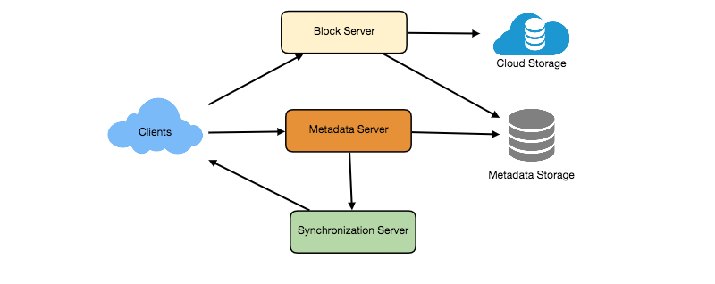
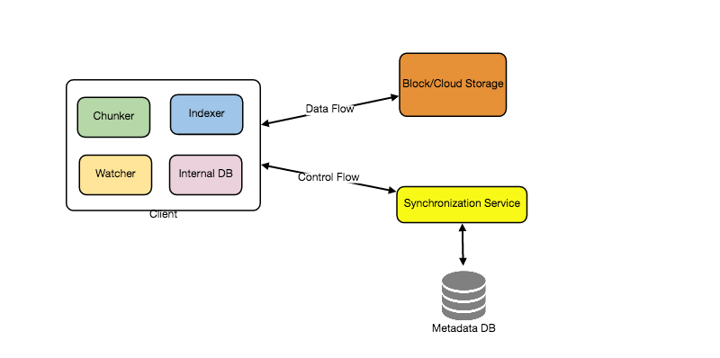
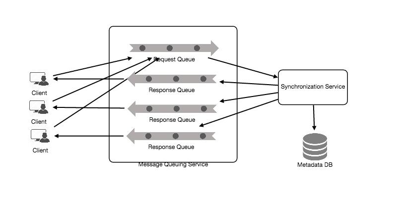
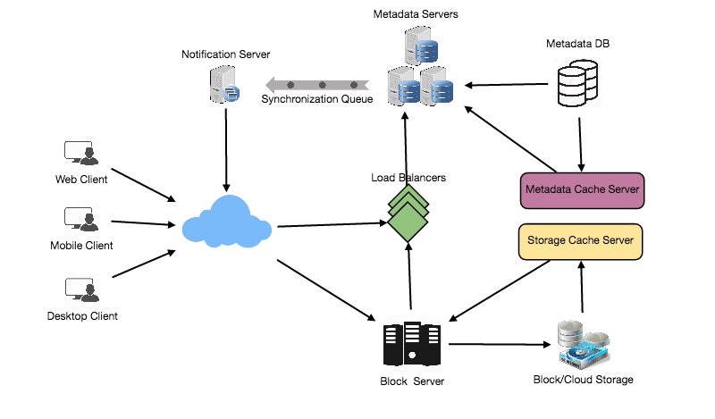

File sync across devices. The whole design turns on one idea: don't move files, move chunks. Split each file into content-addressed blocks, and a 1-sentence edit to a 1 GB document uploads one block, not a gigabyte. That single decision — chunking + content addressing — buys delta sync, cross-user dedup, and resumable uploads all at once.
The crux Sync only what changed by representing every file as a list of content-addressed chunks. Chunk + hash + store-once is the master decision; delta sync, deduplication, and resumability all fall out of it. The other hard part is telling devices what changed, fast.
1. Requirements
Functional: upload/download files; sync across a user's devices automatically; share files; keep version history; work offline then reconcile. Non-functional: durable (never lose a file), bandwidth-efficient (don't re-send unchanged data), low sync latency, available. Extended: shared folders with permissions, large-file support, search.
2. Capacity estimate
- Bandwidth is the binding constraint. The naive design re-uploads/re-downloads whole files on every change — ruinous. Block-level sync cuts actual network traffic by up to two orders of magnitude.
- Storage is enormous but deduplicates well: the same file/chunk uploaded by many users is stored once. (At scale Dropbox's S3 bill grew so large they built their own storage, Magic Pocket, and migrated off S3 in 2015–16.)
- Read/write mix: mixed; sync is bidirectional, and metadata operations (what changed?) vastly outnumber block transfers.
3. System API
uploadChunks(api_key, file_id, [chunk_hash + bytes for MISSING chunks only])
getFileMetadata(api_key, file_id) → { version, [chunk_hashes] }
downloadChunks(api_key, [chunk_hashes]) → bytes
subscribeChanges(api_key, device_id) → stream of changed file_ids
The client first asks the server which chunks it already has (by hash), then uploads only the missing ones — that's where the bandwidth saving comes from.
4. High-level architecture — two services
- Metadata service — the file→chunk-list mapping, versions, and the per-user namespace. Small, transactional, the source of truth for "what's the current state."
- Block service — stores the actual chunks as immutable content-addressed blobs in object storage. Huge, dedup-friendly, CDN-frontable.
- Notification service — tells a user's other devices that something changed (Sub-problem 2).
- Sync client — watches the local filesystem, chunks changed files, talks to both services.
The shape in one sentenceMetadata (small, transactional) and blocks (huge, immutable, dedup'd) live in separate services; the client reconciles local state against metadata and transfers only the missing chunks.
5. Data model — a file is a list of chunk hashes
The key representation: a file is an ordered list of chunk hashes, and each chunk is an immutable, content-addressed blob (its address is its hash, e.g. SHA-256). Editing a file produces a new list of hashes — identical chunks keep their old hashes (and thus aren't re-stored or re-sent).
| Entity | Holds |
|---|
| File / version | file_id, version, ordered [chunk_hash], owner, path |
| Chunk | chunk_hash (PK) → blob in object store; reference count for GC |
| Device | device_id, user_id, last-synced version cursor |
Three scenarios — the hard parts, as questions
Scenario 1 — one sentence in a 1 GB file
A user edits one paragraph of a 1 GB document and saves. How much data should cross the network — and what does the naive "upload the file" design send instead?
Scenario 2 — my laptop edit appears on my phone
You edit a file on your laptop; your phone should reflect it quickly. With millions of mostly-idle devices, how do devices learn that something changed without every device polling the server constantly?
Scenario 3 — two devices edit offline
Your laptop (offline on a plane) and your desktop both edit the same file. Both come online. What happens, and how do you avoid silently losing one person's edits?
Scenario 1 is chunking + dedup (the master idea). Scenario 2 is change notification. Scenario 3 is conflict handling.
6. The hard sub-problems
Sub-problem 1 — Chunking & content addressing
Split each file into chunks (a few KB to a few MB); hash each chunk; the file is the ordered list of hashes; store each unique chunk once, keyed by its hash. This single mechanism delivers three wins at once:
- Delta sync — on edit, only chunks whose content changed get new hashes, so only those upload.
- Cross-user deduplication — if any user already uploaded a chunk with that hash, the server has it; nobody re-uploads it. (Two users with the same file store one copy.)
- Resumable uploads — a broken upload resumes from the missing chunks; content addressing makes "what's missing?" a hash-set diff.
The failure that happens when you get this wrong — the full re-upload
This is Scenario 1. Treat a file as one opaque blob and a one-sentence edit re-uploads the entire 1 GB — saturating the user's uplink, wasting storage on near-duplicate versions, and making sync feel broken. With chunking, that edit touches maybe one 4 MB chunk: the client hashes the chunks, asks the server which hashes it's missing, and uploads only those — the up-to-100× traffic reduction. (Content-defined chunking, where boundaries follow content not fixed offsets, even survives an insertion that would otherwise shift every later fixed block.)
Sub-problem 2 — Notifying devices of changes
A device must learn quickly that the cloud state changed — but millions of mostly-idle devices polling constantly would crush the servers. The answer is a push/long-lived channel: each online device holds a long-poll or WebSocket connection to a notification service; when a file changes, the service signals only the affected user's devices, which then pull the new metadata and missing chunks.
The failure that happens when you get this wrong — the polling storm
This is
Scenario 2. If every device polls "anything new?" every few seconds, you pay for millions of mostly-empty requests/sec — cost and load scaling with device count, not with actual change rate. A long-lived notification channel inverts it: the server pushes only when something changed, so cost tracks
changes, not
devices. This is the same
connection-state-at-scale problem as a chat backend (hold many idle connections cheaply; a backplane routes a change to the right device's connection).
Sub-problem 3 — Conflicts across devices
Offline edits on two devices will collide. Versioning (each save creates a new version against a known parent) lets the server detect when two edits share a parent — a conflict.
The failure that happens when you get this wrong — lost edits
This is
Scenario 3. Naive last-write-wins silently discards one device's offline edits. Dropbox's pragmatic answer is to
never lose data: on a conflict it keeps both, creating a "conflicted copy" (e.g.
"file (Jane's conflicted copy).txt") so a human resolves it — correctness over cleverness. (True automatic merge of concurrent edits is the harder
collaborative-editing problem, solved with OT/
CRDTs — overkill for file sync, essential for Google Docs.)
The design at a glance
| Piece | Choice | Why |
|---|
| File representation | Ordered list of content-addressed chunk hashes | Delta sync + dedup + resumability for free |
| Block storage | Immutable blobs in object store (Magic Pocket at scale) | Dedup, durability, cheap |
| Metadata | Transactional store (file→chunks, versions) | Source of truth for current state |
| Change notification | Long-lived push channel | Cost tracks changes, not device count |
| Conflicts | Versioning + conflicted copies | Never lose data |
Self-check — can you reconstruct the design?
- The walkthrough: why is bandwidth the binding constraint, and what does representing a file as chunk-hashes buy you (name the three wins)?
- Scenario 1 (delta): Walk a one-sentence edit through chunking — how much uploads, and how does the client know what's missing?
- Scenario 2 (notify): Why is polling wrong at device scale, and what replaces it?
- Scenario 3 (conflict): How does versioning detect a conflict, and why "conflicted copy" over last-write-wins?
- Why are chunks content-addressed (keyed by hash), and how does that enable cross-user dedup?
The shape to remember: a file is a list of content-addressed chunks — that one idea gives delta sync, dedup, resumability; the other hard parts are push notification and conflict handling.
Related: Object Storage & CDN, Long-poll/WS/SSE (notifications), Collaborative Editing (true merge), CRDTs, Replication (durability).
Cloud services — what you'd build it on
| Piece | AWS | GCP | Azure |
|---|
| Block/object storage | S3 | Cloud Storage | Blob Storage |
| Metadata store | DynamoDB / Aurora | Spanner / Firestore | Cosmos DB |
| Notification channel | API Gateway WebSocket / IoT | Pub/Sub + WebSocket tier | Web PubSub |
A vocabulary aid; product names change — verify before relying on it.
Famous implementations
Dropbox Magic Pocket
- What it is. Dropbox's in-house exabyte-scale block storage; they migrated off S3 onto it in 2015–16.
- Key idea. At their scale, owning storage beat renting it — the S3 bill justified building (and operating) custom hardware + software.
- The failure to watch. The general lesson: build-vs-buy flips only at extreme, sustained scale — don't copy it prematurely (the cost lesson).
Content-defined chunking (rsync lineage)
- What it is. Rolling-hash chunking that sets boundaries by content, so an insertion doesn't shift every subsequent block.
- Key idea. Stable chunk boundaries maximize dedup hits across versions and users.
- The failure to watch. Fixed-size chunking is simpler but loses dedup whenever bytes are inserted mid-file.
Build it yourself
Design the sync diff
A client has a locally-changed file. Design the exchange that uploads the minimum bytes and updates everyone's view — what does the client send first, and what does the server reply?
Reveal the approach
Client chunks the file and computes the new ordered list of chunk hashes. It sends the hash list (tiny) to the server, which diffs it against the chunks it already has and replies with the set of missing hashes. The client uploads only those chunk bodies to the block service, then commits the new version in the metadata service (against the known parent version, for conflict detection). The notification service signals the user's other devices, which fetch the new hash list and download only the chunks they lack. Net transfer for a one-paragraph edit: one chunk, plus two tiny metadata round-trips.
Design-it-yourself
- Shared folders with permissions. Multiple users sync one folder; who can read/write, and how does a change fan out? → access control.
- Garbage-collect orphaned chunks. When versions are deleted, reclaim chunks no file references — safely, under concurrency. → reference counting.
Designing a file hosting service like Dropbox or Google Drive — chunked uploads, metadata synchronization, deduplication, and the message-queue-driven sync engine that keeps every device consistent.
The bottleneck Finite capacity & latency. chunking + object storage buys dedup and sync, paid in metadata coordination.
Let's design a file hosting service like Dropbox or Google Drive. Cloud file storage enables users to store their data on remote servers. Usually, these servers are maintained by cloud storage providers and made available to users over a network (typically through the Internet). Users pay for their cloud data storage on a monthly basis.
Similar Services: OneDrive, Google Drive
Why Cloud Storage?
Cloud file storage services have become very popular recently as they simplify the storage and exchange of digital resources among multiple devices. The shift from using single personal computers to using multiple devices with different platforms and operating systems such as smartphones and tablets and their portable access from various geographical locations at any time is believed to be accountable for the huge popularity of cloud storage services. Some of the top benefits of such services are:
Availability: The motto of cloud storage services is to have data availability anywhere anytime. Users can access their files/photos from any device whenever and wherever they like.
Reliability and Durability: Another benefit of cloud storage is that it offers 100% reliability and durability of data. Cloud storage ensures that users will never lose their data, by keeping multiple copies of the data stored on different geographically located servers.
Scalability: Users will never have to worry about getting out of storage space. With cloud storage, you have unlimited storage as long as you are ready to pay for it.
If you haven't used dropbox.com before, we would highly recommend creating an account there and uploading/editing a file and also going through different options their service offers. This will help you a lot in understanding this chapter better.
Requirements and Goals of the System
You should always clarify requirements at the start and ask questions to find the exact scope of the system you are designing.
What do we wish to achieve from a Cloud Storage system? Here are the top-level requirements for our system:
- Users should be able to upload and download their files/photos from any device.
- Users should be able to share files or folders with other users.
- Our service should support automatic synchronization between devices, i.e., after updating a file on one device, it should get synchronized on all devices.
- The system should support storing large files up to a GB.
- ACID-ity is required. Atomicity, Consistency, Isolation and Durability of all file operations should be guaranteed.
- Our system should support offline editing. Users should be able to add/delete/modify files while offline, and as soon as they come online, all their changes should be synced to the remote servers and other online devices.
Extended Requirements
- The system should support snapshotting of the data, so that users can go back to any version of the files.
Some Design Considerations
- We should expect huge read and write volumes.
- Read to write ratio is expected to be nearly the same.
- Internally, files can be stored in small parts or chunks (say 4MB), this can provide a lot of benefits e.g. all failed operations shall only be retried for smaller parts of a file. If a user fails to upload a file, then only the failing chunk will be retried.
- We can reduce the amount of data exchange by transferring updated chunks only.
- By removing duplicate chunks, we can save storage space and bandwidth usage.
- Keeping a local copy of the metadata (file name, size, etc.) with the client can save us a lot of round trips to the server.
- For small changes, clients can intelligently upload the diffs instead of the whole chunk.
Capacity Estimation and Constraints
- Let's assume that we have 500M total users, and 100M daily active users (DAU).
- Let's assume that on average each user connects from three different devices.
- On average if a user has 200 files/photos, we will have 100 billion total files.
- Let's assume that average file size is 100KB, this would give us ten petabytes of total storage.
100B * 100KB => 10PB
- Let's also assume that we will have one million active connections per minute.
Quiz The original lesson embedded an interactive capacity calculator. Adjust the inputs (Total Users, Files per user, average File size) and it recomputes Total Files and Total Storage using the formulas below. Default values: 500 million users, 200 files per user, 100 KB average file size — yielding 100 billion total files and 10 PB total storage.
- Total Users: 500 million users
- Files per user: 200
- File size (avg): 100 KB
- Total Files (computed): 100 billion
- Total Storage (computed): 10 PB
function updateFields() {
var total_users = document.getElementById("total_users");
var files_per_user = document.getElementById("files_per_user");
var file_size = document.getElementById("file_size");
var total_files = document.getElementById("total_files");
var total_storage = document.getElementById("total_storage");
var total_files_count = total_users.value * 1000000 * files_per_user.value;
var total_size_kb = total_files_count * file_size.value;
var total_size_in_pb = total_size_kb / (1000 * 1000 * 1000 * 1000);
total_files.value = Number((total_files_count / 1000000000).toFixed(2));
total_storage.value = Number((total_size_in_pb).toFixed(2));
}
updateFields();
The original lesson had an interactive widget here; shown above as static content.
High Level Design
The user will specify a folder as the workspace on their device. Any file/photo/folder placed in this folder will be uploaded to the cloud, and whenever a file is modified or deleted, it will be reflected in the same way in the cloud storage. The user can specify similar workspaces on all their devices and any modification done on one device will be propagated to all other devices to have the same view of the workspace everywhere.
At a high level, we need to store files and their metadata information like File Name, File Size, Directory, etc., and who this file is shared with. So, we need some servers that can help the clients to upload/download files to Cloud Storage and some servers that can facilitate updating metadata about files and users. We also need some mechanism to notify all clients whenever an update happens so they can synchronize their files.
As shown in the diagram below, Block servers will work with the clients to upload/download files from cloud storage, and Metadata servers will keep metadata of files updated in a SQL or NoSQL database. Synchronization servers will handle the workflow of notifying all clients about different changes for synchronization.

High level design for Dropbox
Component Design
Let's go through the major components of our system one by one:
a. Client
The Client Application monitors the workspace folder on user's machine and syncs all files/folders in it with the remote Cloud Storage. The client application will work with the storage servers to upload, download and modify actual files to backend Cloud Storage. The client also interacts with the remote Synchronization Service to handle any file metadata updates e.g. change in the file name, size, modification date, etc.
Here are some of the essential operations of the client:
- Upload and download files.
- Detect file changes in the workspace folder.
- Handle conflict due to offline or concurrent updates.
How do we handle file transfer efficiently? As mentioned above, we can break each file into smaller chunks so that we transfer only those chunks that are modified and not the whole file. Let's say we divide each file into fixed size of 4MB chunks. We can statically calculate what could be an optimal chunk size based on 1) Storage devices we use in the cloud to optimize space utilization and Input/output operations per second (IOPS) 2) Network bandwidth 3) Average file size in the storage etc. In our metadata, we should also keep a record of each file and the chunks that constitute it.
Should we keep a copy of metadata with Client? Keeping a local copy of metadata not only enable us to do offline updates but also saves a lot of round trips to update remote metadata.
How can clients efficiently listen to changes happening on other clients? One solution could be that the clients periodically check with the server if there are any changes. The problem with this approach is that we will have a delay in reflecting changes locally as clients will be checking for changes periodically compared to server notifying whenever there is some change. If the client frequently checks the server for changes, it will not only be wasting bandwidth, as the server has to return empty response most of the time but will also be keeping the server busy. Pulling information in this manner is not scalable too.
A solution to above problem could be to use HTTP long polling. With long polling, the client requests information from the server with the expectation that the server may not respond immediately. If the server has no new data for the client when the poll is received, instead of sending an empty response, the server holds the request open and waits for response information to become available. Once it does have new information, the server immediately sends an HTTP/S response to the client, completing the open HTTP/S Request. Upon receipt of the server response, the client can immediately issue another server request for future updates.
Based on the above considerations we can divide our client into following four parts:
I. Internal Metadata Database will keep track of all the files, chunks, their versions, and their location in the file system.
II. Chunker will split the files into smaller pieces called chunks. It will also be responsible for reconstructing a file from its chunks. Our chunking algorithm will detect the parts of the files that have been modified by the user and only transfer those parts to the Cloud Storage; this will save us bandwidth and synchronization time.
III. Watcher will monitor the local workspace folders and notify the Indexer (discussed below) of any action performed by the users, e.g., when users create, delete, or update files or folders. Watcher also listens to any changes happening on other clients that are broadcasted by Synchronization service.
IV. Indexer will process the events received from the Watcher and update the internal metadata database with information about the chunks of the modified files. Once the chunks are successfully submitted/downloaded to the Cloud Storage, the Indexer will communicate with the remote Synchronization Service to broadcast changes to other clients and update remote metadata database.

How should clients handle slow servers? Clients should exponentially back-off if the server is busy/not-responding. Meaning, if a server is too slow to respond, clients should delay their retries, and this delay should increase exponentially.
Should mobile clients sync remote changes immediately? Unlike desktop or web clients, that check for file changes on a regular basis, mobile clients usually sync on demand to save user's bandwidth and space.
b. Metadata Database
The Metadata Database is responsible for maintaining the versioning and metadata information about files/chunks, users, and workspaces. The Metadata Database can be a relational database such as MySQL, or a NoSQL database service such as DynamoDB. Regardless of the type of the database, the Synchronization Service should be able to provide a consistent view of the files using a database, especially if more than one user work with the same file simultaneously. Many NoSQL stores historically traded ACID guarantees for scalability and performance, though several (e.g. DynamoDB, MongoDB) now offer transactional support. If we opt for a store without strong transactional guarantees, we need to enforce ACID-like behavior programmatically in the logic of our Synchronization Service. However, using a relational database can simplify the implementation of the Synchronization Service as they natively support ACID properties.
Metadata Database should be storing information about following objects:
- Chunks
- Files
- User
- Devices
- Workspace (sync folders)
c. Synchronization Service
The Synchronization Service is the component that processes file updates made by a client and applies these changes to other subscribed clients. It also synchronizes clients' local databases with the information stored in the remote Metadata DB. The Synchronization Service is the most important part of the system architecture due to its critical role in managing the metadata and synchronizing users' files. Desktop clients communicate with the Synchronization Service to either obtain updates from the Cloud Storage or send files and updates to the Cloud Storage and potentially other users. If a client was offline for a period, it polls the system for new updates as soon as it becomes online. When the Synchronization Service receives an update request, it checks with the Metadata Database for consistency and then proceeds with the update. Subsequently, a notification is sent to all subscribed users or devices to report the file update.
The Synchronization Service should be designed in such a way to transmit less data between clients and the Cloud Storage to achieve better response time. To meet this design goal, the Synchronization Service can employ a differencing algorithm to reduce the amount of the data that needs to be synchronized. Instead of transmitting entire files from clients to the server or vice versa, we can just transmit the difference between two versions of a file. Therefore, only the part of the file that has been changed is transmitted. This also decreases bandwidth consumption and cloud data storage for the end user. As described above we will be dividing our files into 4MB chunks and will be transferring modified chunks only. Server and clients can calculate a hash (e.g., SHA-256) to see whether to update the local copy of a chunk or not. On server if we already have a chunk with a similar hash (even from another user) we don't need to create another copy, we can use the same chunk. This is discussed in detail later under Data Deduplication.
To be able to provide an efficient and scalable synchronization protocol we can consider using a communication middleware between clients and the Synchronization Service. The messaging middleware should provide scalable message queuing and change notification to support a high number of clients using pull or push strategies. This way, multiple Synchronization Service instances can receive requests from a global request Queue, and the communication middleware will be able to balance their load.
d. Message Queuing Service
An important part of our architecture is a messaging middleware that should be able to handle a substantial number of requests. A scalable Message Queuing Service that supports asynchronous message-based communication between clients and the Synchronization Service instances best fits the requirements of our application. The Message Queuing Service supports asynchronous and loosely coupled message-based communication between distributed components of the system. The Message Queuing Service should be able to efficiently store any number of messages in a highly available, reliable and scalable queue.
Message Queuing Service will implement two types of queues in our system. The Request Queue is a global queue, and all client will share it. Clients' requests to update the Metadata Database will be sent to the Request Queue first, from there Synchronization Service will take it to update metadata. The Response Queues that correspond to individual subscribed clients are responsible for delivering the update messages to each client. Since a message will be deleted from the queue once received by a client, we need to create separate Response Queues for each subscribed client to share update messages.

e. Cloud/Block Storage
Cloud/Block Storage stores chunks of files uploaded by the users. Clients directly interact with the storage to send and receive objects from it. Separation of the metadata from storage enables us to use any storage either in cloud or in-house.

Detailed component design for Dropbox
File Processing Workflow
The sequence below shows the interaction between the components of the application in a scenario when Client A updates a file that is shared with Client B and C, so they should receive the update too. If the other clients were not online at the time of the update, the Message Queuing Service keeps the update notifications in separate response queues for them until they become online later.
- Client A uploads chunks to cloud storage.
- Client A updates metadata and commits changes.
- Client A gets confirmation, and notifications are sent to Clients B and C about the changes.
- Client B and C receive metadata changes and download updated chunks.
Data Deduplication
Data deduplication is a technique used for eliminating duplicate copies of data to improve storage utilization. It can also be applied to network data transfers to reduce the number of bytes that must be sent. For each new incoming chunk, we can calculate a hash of it and compare that hash with all the hashes of the existing chunks to see if we already have same chunk present in our storage.
We can implement deduplication in two ways in our system:
a. Post-process deduplication
With post-process deduplication, new chunks are first stored on the storage device, and later some process analyzes the data looking for duplication. The benefit is that clients will not need to wait for the hash calculation or lookup to complete before storing the data, thereby ensuring that there is no degradation in storage performance. Drawbacks of this approach are 1) We will unnecessarily be storing duplicate data, though for a short time, 2) Duplicate data will be transferred consuming bandwidth.
b. In-line deduplication
Alternatively, deduplication hash calculations can be done in real-time as the clients are entering data on their device. If our system identifies a chunk which it has already stored, only a reference to the existing chunk will be added in the metadata, rather than the full copy of the chunk. This approach will give us optimal network and storage usage.
To scale out metadata DB, we need to partition it so that it can store information about millions of users and billions of files/chunks. We need to come up with a partitioning scheme that would divide and store our data to different DB servers.
1. Vertical Partitioning: We can partition our database in such a way that we store tables related to one particular feature on one server. For example, we can store all the user related tables in one database and all files/chunks related tables in another database. Although this approach is straightforward to implement it has some issues:
- Will we still have scale issues? What if we have trillions of chunks to be stored and our database cannot support to store such huge number of records? How would we further partition such tables?
- Joining two tables in two separate databases can cause performance and consistency issues. How frequently do we have to join user and file tables?
2. Range Based Partitioning: What if we store files/chunks in separate partitions based on the first letter of the File Path. So, we save all the files starting with letter 'A' in one partition and those that start with letter 'B' into another partition and so on. This approach is called range based partitioning. We can even combine certain less frequently occurring letters into one database partition. We should come up with this partitioning scheme statically so that we can always store/find a file in a predictable manner.
The main problem with this approach is that it can lead to unbalanced servers. For example, if we decide to put all files starting with letter 'E' into a DB partition, and later we realize that we have too many files that start with letter 'E', to such an extent that we cannot fit them into one DB partition.
3. Hash-Based Partitioning: In this scheme we take a hash of the object we are storing and based on this hash we figure out the DB partition to which this object should go. In our case, we can take the hash of the 'FileID' of the File object we are storing to determine the partition the file will be stored. Our hashing function will randomly distribute objects into different partitions, e.g., our hashing function can always map any ID to a number between [1…256], and this number would be the partition we will store our object.
This approach can still lead to overloaded partitions, which can be solved by using Consistent Hashing.
Caching
We can have two kinds of caches in our system. To deal with hot files/chunks, we can introduce a cache for Block storage. We can use an off-the-shelf solution like Memcache, that can store whole chunks with their respective IDs/Hashes, and Block servers before hitting Block storage can quickly check if the cache has desired chunk. Based on clients' usage pattern we can determine how many cache servers we need. A high-end commercial server can have up to 144GB of memory; So, one such server can cache 36K chunks.
Which cache replacement policy would best fit our needs? When the cache is full, and we want to replace a chunk with a newer/hotter chunk, how would we choose? Least Recently Used (LRU) can be a reasonable policy for our system. Under this policy, we discard the least recently used chunk first.
Similarly, we can have a cache for Metadata DB.
Load Balancer (LB)
We can add Load balancing layer at two places in our system 1) Between Clients and Block servers and 2) Between Clients and Metadata servers. Initially, a simple Round Robin approach can be adopted; that distributes incoming requests equally among backend servers. This LB is simple to implement and does not introduce any overhead. Another benefit of this approach is if a server is dead, LB will take it out of the rotation and will stop sending any traffic to it. A problem with Round Robin LB is, it won't take server load into consideration. If a server is overloaded or slow, the LB will not stop sending new requests to that server. To handle this, a more intelligent LB solution can be placed that periodically queries backend server about their load and adjusts traffic based on that.
Security, Permissions and File Sharing
One of primary concern users will have while storing their files in the cloud would be the privacy and security of their data. Especially since in our system users can share their files with other users or even make them public to share it with everyone. To handle this, we will be storing permissions of each file in our metadata DB to reflect what files are visible or modifiable by any user.
Principal-level deep dive
Deeper analysis: trade-offs & failure modes
The single most consequential design decision in Dropbox is fixed-size chunking (the real client uses 4 MB blocks). Every downstream property — deduplication, delta sync, resumable upload, parallelism — falls out of this one choice. Get chunking wrong and you cannot retrofit the others.
Why chunk? Four properties from one decision
| Property | How chunking enables it |
|---|
| Deduplication | Each chunk is content-addressed by hash (e.g. SHA-256). Identical chunks — across versions, files, or even users — store once. Editing 1 line of a 1 GB file re-uploads only the changed 4 MB block. |
| Delta sync | Client diffs the new chunk list against the old; uploads only chunks whose hash changed. A 2 KB edit costs ~4 MB over the wire (one block), not 1 GB. |
| Resumable upload | A dropped connection at 80% means re-sending one in-flight 4 MB chunk, not the whole file. The metadata service tracks which chunk hashes have been committed. |
| Parallelism | Chunks upload/download concurrently across many block servers, saturating bandwidth instead of one TCP stream's throughput. |
Fixed vs. content-defined chunkingDropbox uses fixed 4 MB boundaries for simplicity. The downside: inserting one byte at the start of a file shifts every boundary, so all chunks rehash and dedup collapses (the "boundary-shift" problem). Content-defined chunking (rolling hash / Rabin fingerprint, as in rsync and restic) sets boundaries on content patterns, so an insert only re-chunks locally. Dropbox accepts the fixed-size trade-off because most edits are appends or in-place, and fixed boundaries make the metadata trivially simple.
Metadata service vs. block storage: the load-bearing separation
The cleanest part of the architecture is splitting two stores with opposite access patterns. The metadata DB holds the file tree, chunk lists, version vectors, and permissions — small records, strongly consistent, transactional, frequently mutated. Block storage (Amazon S3 in Dropbox's early days, later their own Magic Pocket) holds immutable, content-addressed blobs — huge, write-once, served from a CDN. They scale, fail, and get backed up independently.
Why immutability mattersBecause blocks are addressed by content hash, they are never mutated — a "change" is a new block with a new hash plus a metadata pointer flip. This makes block storage idempotent (re-uploading a known hash is a no-op), trivially cacheable at the CDN edge, and safe to replicate aggressively. All the hard consistency lives in the small metadata DB. See
65 Object Storage & CDN.
Sync conflict resolution: client-side vs. server-side
When two clients edit the same file offline, you have a true write-write conflict. Dropbox's pragmatic answer is not to merge: it keeps both versions and renames one to filename (Alice's conflicted copy 2026-06-13).ext, surfacing the conflict to the human rather than risking silent data loss. This is the "last-writer-wins is unacceptable for user files" stance.
| Approach | Behavior | Trade-off |
|---|
| Last-writer-wins | Newer timestamp overwrites | Silent data loss; unacceptable for documents |
| Conflicted copy (Dropbox) | Keep both, rename one, let user resolve | No data loss, but clutter; user must merge manually |
| CRDT auto-merge | Structure data so concurrent edits commute | Great for collaborative text (Google Docs, Notion), but generic binary files can't be CRDTs |
Why not CRDTs for files?CRDTs require knowing the data's semantics to define a commutative merge. A
.docx or
.psd is an opaque blob — there is no safe automatic merge, so Dropbox falls back to conflicted copies. Real-time collaborative editors that
do merge (Google Docs) operate on a structured document model, not a file blob. See
35 CRDTs.
The notification channel: how clients learn of changes
A client needs to know "a file you care about changed" without hammering the server. Dropbox runs a dedicated long-poll notification server separate from the metadata service. The client opens a long-poll connection that the server holds open (e.g. 30–60s); when a relevant change lands, the server responds immediately, the client closes and reissues the poll. On the response, the client then pulls the actual metadata diff from the metadata service.
Why long-poll and not WebSockets?The change signal is low-frequency and one-directional (server→client "something changed"). Long-poll reuses ordinary HTTP, survives proxies/firewalls, and is cheap to scale to tens of millions of mostly-idle connections — you don't need full-duplex WebSocket framing for a heartbeat. The pull-after-notify pattern also keeps the notification server stateless and tiny. See
13 Long-Poll/WS/SSE.
Bandwidth optimization & failure modes
Beyond delta sync, the client compresses chunks before upload and applies cross-user dedup at the storage layer — if any user already uploaded a chunk with that hash, the new uploader only commits the pointer (this is also the basis of the classic "hash-only upload" privacy concern). LAN sync lets co-located clients fetch chunks from each other instead of round-tripping to the cloud.
| Failure mode | Consequence | Mitigation |
|---|
| Metadata/block split-brain | Metadata points to a chunk that didn't commit | Commit chunks to block storage first, flip metadata pointer last (write-ahead ordering) |
| Clock skew across clients | Wrong "newer" version chosen | Use version vectors / logical clocks, not wall-clock timestamps |
| Hash collision | Two different chunks dedup to one | Cryptographic hash (SHA-256) makes accidental collision negligible |
| Thundering-herd on shared-folder edit | N clients all long-poll then pull at once | Jittered poll re-issue; CDN absorbs the block pulls |
Principal-level mastery check
- Can you explain how a single design choice — fixed-size chunking — simultaneously enables deduplication, delta sync, resumable upload, and parallel transfer? Walk the chain from each property back to the chunk.
- Why does editing one byte at the front of a large file defeat dedup under fixed-size chunking, and how does content-defined chunking (rolling hash) avoid that boundary-shift problem?
- Why are metadata and block storage separated into two stores, and why is it essential that blocks be immutable and content-addressed? What property of the system lets the CDN cache them safely?
- Why does Dropbox resolve a write-write conflict by creating a "conflicted copy" instead of either last-writer-wins or an automatic merge? Why can't generic binary files use CRDTs the way Google Docs text can?
- Why does the notification channel use long-polling rather than WebSockets, and why does the client pull the metadata diff after the notify rather than receiving the change inline?
- If the metadata pointer were flipped before the chunk was committed to block storage, what failure could occur — and why does write-ahead ordering (chunk first, pointer last) prevent it?
- Why should sync use version vectors / logical clocks instead of wall-clock timestamps to decide which version is newer across multiple clients?